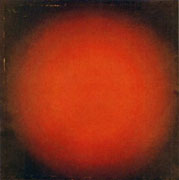

Alphonse
Allais: "Stupeur de jeunes recrues en apercevant pour la première
fois ton azur, ô Méditerranée," 1887
|

Kazimir Malevich:
Painterly Realism of a Peasant Woman
in Two Dimensions (Red Square), 1915
|
Aleksandr Rodchenko:
Pure Yellow Color, 1921
|

Ivan Kljun:
Red Light (Spherical Composition), 1923
|
Atsuko Tanaka: Untitled, 1955
|
Yves Klein:
Monochrome Bleu (IKB 46), 1955
|
Günther Uecker: Das Gelbe Bild, 1957
|
Otto Piene: Ein Fest für das Licht, 1958
|
Jef Verheyen: Espace (Vert), 1963
|
Gotthard Graubner: Farbraum, 1963
|
John McCracken: Untitled, 1967
|
Milton Resnick: Roswell III, 1970
|

Bernard Aubertin:
Toile Rouge Flammée, 1973
|

Mimo Rotella: Copertura Arancion, 1980
|
|
Joseph Marioni: Painting Nr. 2, 1986
|
Lothar Quinte: Farbraum Rot, 1986
|
John Zurier:
To Failings Mild, 1998/2004
|
|
|
Anish Kapoor: Blood Cinema, 2000
|
Nishikawa: Color As Shadow,
2000/2001
|

Olivier Mosset: Untitled, 1999
|
Daniel Buren: La Couleur Encadrée, 2004
|
John Miller:
Everything Is Painted Brown, 2004
|
Imi Knoebel:
An meine grüne Seite, 2005
|